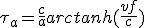

|
Hosted by the courtesy of GitHub |
The stars ASAP


 Durée du voyage intersidéral Résolutions de l'ONU en HTML Bussard Ramjet
|
DWARF : dwarf2xml
ELF : libelf examples Code presentation : ctoohtml |
|
Hosted by the courtesy of GitHub |
The stars ASAP
Durée du voyage intersidéral Résolutions de l'ONU en HTML Bussard Ramjet
|
DWARF : dwarf2xml
ELF : libelf examples Code presentation : ctoohtml |
| Tables des durées | Calculs | politique et voyage intersidéral | Home |
Il s'agit ici de calculer la durée d'un voyage aller-retour de plusieurs années lumières comprenant une phase d'accélération de valeur "a", une phase de croisière à la vitesse Vc, puis d'une phase de décélération de même facteur de charge que l'accélération. Le retour s'effectue dans les mêmes conditions.
Afin de simplifier les calculs, on ne prend en compte que la première moitié du voyage, c'est à dire que l'on s'arrête à mi-chemin à la distance "D". Il suffit de multiplier par deux pour les durées obtenues pour avoir l'aller simple et par 4 pour l'aller-retour.
Lorsque l'accélération est insuffisante, le voyage ne comporte pas de phase de croisière. La valeur de la vitesse limite accessible pour l'accélération et la distance seront également évaluées.
Enfin, avec la vitesse, on pourra calculer l'énergie cinétique par unité de masse.
Les images des formules mathématiques ont été produites avec mimetex. La plupart des hébergeurs gratuits ne proposant pas les cgi-bin, les formules sont prés-compilées à l'aide de ce script.
(1.1)
Pendant la phase d'accélération, la vitesse :
(1.2)
La distance parcourue pendant cette phase est :
(1.3)
(1.4)
On recherche maintenant la vitesse maximale valim que l'on peut atteindre sur la distance D avec l'accélération a, qui est atteinte au temps Talim :
(1.5)
On utilise (1.2) pour exprimer Talim en fonction de valim
(1.6)
On pose que la vitesse finale vf est la vitesse la vitesse limite pour l'accélération valim , s'il n'y a pas de croisière, ou la vitesse de croisière vc :
(1.7)
Encore avec (1.2), on peut calculer le temps d'accélération Ta :
(1.8)
Et pour la distance parcourue dans cette phase, on use de (1.4) et (1.7)
(1.9)
Pour la croisière, il faut parcourir la distance (D - Da) à la vitesse vc :
(1.10)
(1.11)
Pour l'énergie cinétique :
(1.12)
On utilise la formulation de changement de référentiel par transformation de Lorentz (voir le cours). On a besoin de ne considérer qu'une seule coordonnée, x, les autres étant invariantes. Dans le référentiel du mobile on considère un instant infinitésimal. Dans ce référentiel, le mobile reste centré sur l'origine. Dans le référentiel de la terre la durée écoulée est dt et le déplacement dx :
(2.1)
Avec la rapidité :
(2.2)
L'intérêt de la rapidité est qu'elle est additive contrairement à la vitesse.
On partage le voyage en 2 parties, une première phase sur la distance Da en accélération constante, dite d'accélération, puis dans un deuxième temps la phase de croisière en accélération nulle sur la distance Dc :
(2.3) 
On s'intéresse d'abord à la phase d'accélération qui permettra d'atteindre ou non la vitesse de croisière. Il faut calculer la durée τ dans le référentiel propre nécessaire pour atteindre une certaine vitesse ou plus exactement une rapidité η (quantité additive) sous accélération constante a :
(2.4)
(2.5)
(2.6)
On peut maintenant calculer la distance parcourue Da pendant l'accélération dans le référentiel de la terre en utilisant (2.1) pour la coordonnée spatiale dx :
(2.7)
(2.8)
(2.9)
En prenant D = Da , dans l'équation (2.9) on évalue durée maximale de la phase d'accélération τalim , et la vitesse de croisière.
(2.10)
(2.11)
(2.12)
Maintenant on calcule la vitesse maximale valim obtenu pour la distance D. On utilise (2.2) et (2.6) sur le membre de gauche de (2.12) :
(2.13)
(2.14)
En se souvenant que :
(2.15)
(2.16)
On pose comme vitesse finale :
(2.17)
Et en utilisant (2.6) et (2.2) avec vf , on peut calculer la durée τa de l'accélération dans le référentiel du mobile :
(2.18) 
Pour la phase de croisière, on a besoin de la durée, la distance à parcourir étant, évidemment D - Da . On reprend (2.1) pour la coordonnée x, comme en (2.7), mais cette fois pour une accélération nulle et une vitesse vf :
(2.19)
(2.20)
(2.21)
(2.22) 
Pour être complet, on converti les durées du référentiel propre en durée dans le référentiel de la Terre. On utilise (2.1), cette fois pour le temps :
(2.23)
Pour la phase d'accélération :
(2.24)
(2.25)
Pour la croisière :
(2.26)
(2.27)
(2.28)
Pour l'énergie cinétique, on utilise la transformée de l'impulsion entre le référentiel du mobile et celui de la Terre.
(2.29)
(2.30)
(2.31)
(2.32)
(2.33)
Nous avons maintenant tous les éléments nécessaires pour calculer la durée du voyage intersidéral dans différentes situations qui nous intéressent.
Les résultats de ces calculs pour les étoiles proches sont présentés ici en HTML.
| Tables des durées | Calculs | politique et voyage intersidéral | Home |
|
Hosted by the courtesy of GitHub |
The stars ASAP
Durée du voyage intersidéral Résolutions de l'ONU en HTML Bussard Ramjet
|
DWARF : dwarf2xml
ELF : libelf examples Code presentation : ctoohtml |